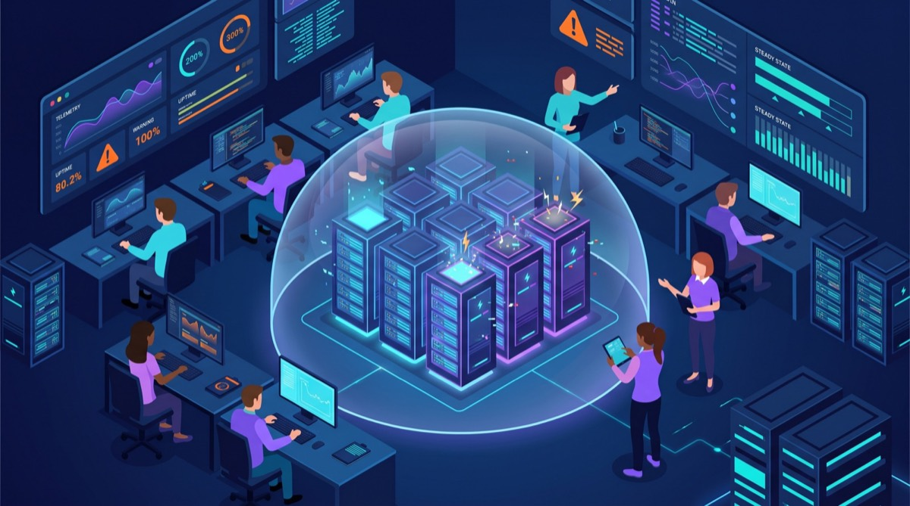

Chaos engineering za QA timove: kako zapravo izgleda game day
Praktičan pogled na chaos engineering alate i kako organizovati game day za testiranje otpornosti, a da se on ne pretvori u ispad sistema.
Većina test suiteova provjerava da li se sistem ponaša ispravno kada sve oko njega radi. Rijetko provjeravaju šta se dešava kada zavisnost istekne (timeout), kada se kontejner restartuje usred zahtjeva ili kada baza podataka pređe na rezervnu instancu (failover) u najgorem mogućem trenutku. Upravo takvi uslovi se pojavljuju u stvarnim incidentima, a chaos engineering — namjerno i kontrolisano ubacivanje grešaka da bi se vidjelo kako sistem zaista reaguje — disciplina je izgrađena oko toga da se ovo testira namjerno, umjesto da se otkrije u produkciji.

QA timovi se često izostavljaju iz chaos engineeringa jer se on predstavlja kao briga SRE ili platform tima. To je greška. Osmišljavanje dobrog scenarija otkaza, definisanje šta znači „i dalje radi" i odlučivanje kada se rezultat računa kao prolaz, a kada kao pad — to su vještine testiranja, a ne vještine infrastrukture.
Ukratko o alatima
Nema potrebe počinjati izborom alata. Ekosistem se grubo dijeli u tri grupe: open-source frameworke fokusirane na Kubernetes, poput Chaos Mesh i LitmusChaos, koji unutar klastera ubacuju greške kao što su gašenje podova, mrežno kašnjenje ili I/O opterećenje; komercijalne platforme poput Gremlina i Steadybita, koje na slične tipove grešaka dodaju vođene tokove rada, kontrolu pristupa i izvještaje; i cloud-native servise poput AWS Fault Injection Service (FIS), koji pokreće potpuno upravljane eksperimente — zaustavljanje instance, ograničavanje API poziva, failover baze — bez instaliranja ikakvih agenata, i dolazi sa bibliotekom scenarija sa unaprijed pripremljenim testovima za stvari poput usporavanja jedne Availability Zone ili prekida konekcije između regiona.
Detalj vrijedan pažnje, koji god alat na kraju koristili, jeste sigurnosni mehanizam: FIS omogućava da se eksperiment ograniči po tagu (tako da su, recimo, samo resursi označeni sa environment: staging kvalifikovani) i da se postave uslovi zaustavljanja vezani za CloudWatch alarme, pa se eksperiment automatski prekida ako, na primjer, vrijeme odziva pređe prihvatljivi prag. Ta kombinacija — usko ciljanje plus automatski prekidač — je ono što razdvaja „kontrolisani eksperiment" od „samoizazvanog ispada".
Kako izgleda game day
„Game day" je zakazana sesija u kojoj tim zajedno, uživo, pokreće chaos eksperimente, umjesto da ih pušta kao posao bez nadzora. Struktura koja se u praksi pokazala dobrom izgleda ovako:
- Izaberite scenario sa razlogom iza njega — reprodukcija ranijeg incidenta, stres-test funkcionalnosti koja je upravo puštena, ponovno testiranje ispravke sa prethodnog game daya ili vraćanje na post-mortem koji tim i dalje brine.
- Zapišite stabilno stanje (steady state) prije nego što bilo šta dirate. Na primjer: „5.000 zahtjeva u minuti ka početnoj stranici uspijeva u 99% slučajeva za manje od jedne sekunde." Ako ovo ne možete da formulišete, još ne znate kako bi izgledalo „pokvareno".
- Napišite hipotezu, a ne samo akciju. Ne „ugasi kontejner", nego „kada se jedan kontejner restartuje, stabilno stanje i dalje važi." Testira se hipoteza; ubacivanje greške je samo mehanizam.
- Počnite sa najmanjim radijusom uticaja (blast radius) iz kog možete nešto da naučite — jedna instanca, jedan nekritičan servis, kratak vremenski prozor, u satima slabog saobraćaja — i proširujte ga tek kada taj manji test uspije.
- Pokrenite, posmatrajte, zapišite. Potvrdite da stabilno stanje važi prije nego što išta ubacite (sistem koji je već nestabilan neće vam dati koristan rezultat), a zatim pratite i metu i sve što je ispred ili iza nje u lancu zbog mogućih iznenađenja.
- Uradite debrief kao kontrolisani post-mortem. Pregledajte svaki eksperiment, počevši od onih koji nisu prošli kako je očekivano, prijavite bagove za ono što ste pronašli i odlučite da li je uspješan eksperiment vrijedan automatizacije, tako da se redovno pokreće.
Jednostavan način da se test slučaj zapiše, prije nego što uopšte dođe do alata, je ovaj:
Scenario: Primary database instance fails over
Steady state: 95% of checkout requests complete in < 200ms
Hypothesis: failover completes with no checkout requests lost,
though latency may briefly exceed the 200ms target
Blast radius: single staging replica, 15-minute window, off-peak
Stop condition: error rate > 5% for 60 seconds -> abortTo je test slučaj koji QA inženjer može da napiše i pregleda sa istom rigoroznošću kao i bilo koji drugi test, prije nego što iko otvori ijedan chaos alat.
Zamke i ograničenja
Chaos engineering najčešće ne uspije iz razloga koji nemaju nikakve veze sa alatima. Procjenjivanje alata prije nego što se pokrene ijedan ručni eksperiment česta je prva greška — prijava u konzolu i ručno gašenje jednog servera nauči vas više, i brže, od upoređivanja alata. Preskakanje ograničenja radijusa uticaja je druga: eksperimenti nad cijelom produkcijom, bez najave, nešto su do čega zreli timovi vremenom stignu, a ne početna tačka. Pokretanje eksperimenta bez zapisane hipoteze pretvara ga u nasumično čačkanje, pa je kasnije teško znati da li se išta zaista naučilo. A pokretanje eksperimenata bez dovoljno observabilityja da se vidi šta se dešavalo tokom testa — a ne samo da li je „prošao" — znači da ne možete da odgovorite na najkorisnije pitanje nakon toga, a to je obično „zašto".
Postoje i tvrđa ograničenja. Chaos eksperiment nad sistemom koji je već nestabilan uglavnom vam kaže da je sistem nestabilan, što ste vjerovatno već znali. U regulisanim ili čvrsto povezanim produkcijskim okruženjima trošak i rizik eksperimentisanja mogu biti stvarni, pa neki timovi nikada ne odu dalje od staginga — i to je legitimna tačka zaustavljanja, a ne neuspjeh. I uspješan rezultat game daya je samo snimak trenutnog stanja: kaže da je sistem podnio ovaj otkaz, ovog dana, pod ovim opterećenjem — a ne da će zauvijek podnijeti svaki otkaz.
Šta dalje
- Ove sedmice pokrenite jedan ručni eksperiment bez ikakvih alata: isključite jednu nekritičnu instancu u neprodukcijskom okruženju i posmatrajte šta se dešava.
- Za sljedeći planirani game day zapišite stabilno stanje i hipotezu prije nego što izaberete grešku koju ćete ubaciti — format iznad je dovoljan.
- Počnite sa najmanjim radijusom uticaja iz kog možete nešto da naučite i proširujte ga tek kada se taj eksperiment ponaša kako je očekivano.
- Ako je vaš stack AWS-native, isprobajte FIS biblioteku scenarija za prvi vođeni eksperiment sa ugrađenim uslovom zaustavljanja, umjesto da ga pravite ručno.